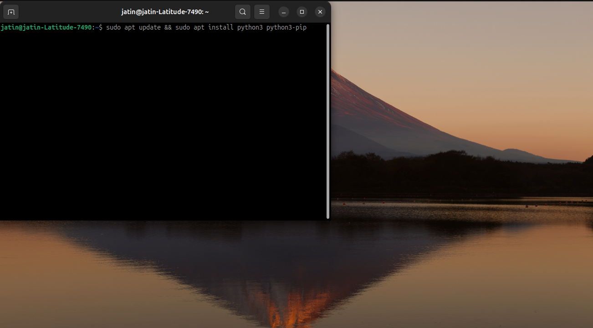

Python Development Setup on Linux
Required Software
To work with Python professionally, you will need to install Python and a code editor like Visual Studio Code. Python is a popular programming language known for its simplicity and versatility, and Visual Studio Code is a widely used code editor that provides excellent support for Python development.
Install Python
On most Linux distributions, you can install Python using the package manager.
- Ubuntu/Debian:
sudo apt update && sudo apt install python3 python3-pip - Fedora:
sudo dnf install python3 python3-pip -
Linux (64-bit)
Download from: Visual Studio Code for Linux

Install Visual Studio Code
Here is the installer matching your operating system.